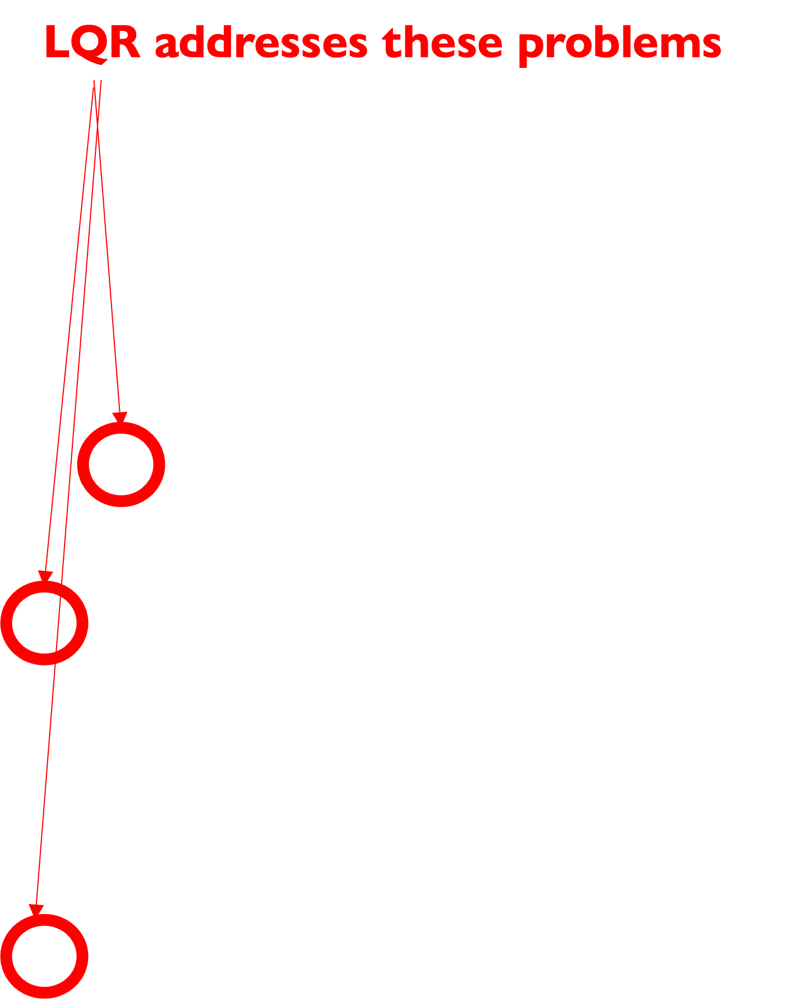

CSC477 Introduction to Mobile Robotics
Week #5: Optimal Control and the Linear Quadratic Regulator (LQR)
Today’s agenda
- Intro to Control
- Linear Quadratic Regulator (LQR)

\[ \begin{align} \operatorname*{minimize}_{\pi_0, \ldots, \pi_{T-1}} \quad &\mathbb{E}_{e_t} \left[ \sum_{t=0}^{T} c(\mathbf{x}_t, \mathbf{u}_t) \right] \\ \text{subject to} \quad &\mathbf{x}_{t+1} = f_t(\mathbf{x}_t, \mathbf{u}_t, e_t) \quad \color{red}{\text{known dynamics}} \\ &\mathbf{u}_t = \pi_t(\mathbf{x}_{0:t}, \mathbf{u}_{0:t-1}) \\ & \color{red}\text{control law / policy} \end{align} \]
Today’s agenda
- Intro to Control
- Linear Quadratic Regulator (LQR)
What you can do with LQR control
What you can do with (variants of) LQR control
Pieter Abbeel, Helicopter Aerobatics
LQR: assumptions
- You know the dynamics model of the system
- It is linear: \(x_{t+1} = Ax_t + Bu_t\)
\[ \mathbb{R}^d \qquad\qquad\qquad\qquad \mathbb{R}^k \]
\[ A \in \mathbb{R}^{d \times d} \qquad\qquad\qquad\qquad B \in \mathbb{R}^{d \times k} \]
Which systems are linear?
- Omnidirectional robot
\[ \begin{align} x_{t+1} &= x_t + v_x(t)\delta t & \mathbf{x}_{t+1} &= I\mathbf{x}_t + \delta t I \mathbf{u}_t \\ y_{t+1} &= y_t + v_y(t)\delta t \qquad \Rightarrow & A &= I \\ \theta_{t+1} &= \theta_t + \omega_z(t)\delta t & B &= \delta t I \end{align} \]
- Simple car
\[ \begin{align} x_{t+1} &= x_t + v_x(t)\cos(\theta_t)\delta t \\ y_{t+1} &= y_t + v_x(t)\sin(\theta_t)\delta t \qquad \Rightarrow \\ \theta_{t+1} &= \theta_t + \omega_z\delta t \end{align} \]
Which systems are linear?
- Omnidirectional robot
\[ \begin{align} x_{t+1} &= x_t + v_x(t)\delta t & \mathbf{x}_{t+1} &= I\mathbf{x}_t + \delta t I \mathbf{u}_t \\ y_{t+1} &= y_t + v_y(t)\delta t \qquad \Rightarrow & A &= I \\ \theta_{t+1} &= \theta_t + \omega_z(t)\delta t & B &= \delta t I \end{align} \]
- Simple car
\[ \begin{align} x_{t+1} &= x_t + v_x(t)\cos(\theta_t)\delta t & \mathbf{x}_{t+1} &= I\mathbf{x}_t + \begin{bmatrix} \delta t\cos(\theta_t) & 0 & 0 \\ 0 & \delta t\sin(\theta_t) & 0 \\ 0 & 0 & \delta t \end{bmatrix} \mathbf{u}_t \\ y_{t+1} &= y_t + v_x(t)\sin(\theta_t)\delta t \qquad \Rightarrow & A &= I \\ \theta_{t+1} &= \theta_t + \omega_z\delta t & B &= B(\mathbf{x}_t) \end{align} \]
The goal of LQR
Stabilize the system around \(x_t = 0\) state with control \(u_t = 0\)
Then \(x_{t+1} = 0\) and the system will remain at zero forever
If we want to stabilize around x* then let x – x* be the state
LQR: assumptions
You know the dynamics model of the system
It is linear: \(x_{t+1} = Ax_t + Bu_t\)
- There is an instantaneous cost associated with being at state
\(x_t\) and taking the action \(\mathbf{u}_t : c(x_t, u_t) = x_t^T Qx_t +u_t^T Ru_t\)
Quadratic state cost:
Penalizes deviation
from the zero vector
Quadratic control cost:
Penalizes high control
signals
LQR: assumptions
You know the dynamics model of the system
It is linear: \(x_{t+1} = Ax_t + Bu_t\)
- There is an instantaneous cost associated with being at state
\(x_t\) and taking the action \(\mathbf{u}_t : c(x_t, u_t) = x_t^T Qx_t +u_t^T Ru_t\)
Square matrices Q and R must be positive definite:
\(\color{black}Q = Q^T \quad \text{and} \quad \forall x, x^T Qx > 0\)
\(\color{black}R = R^T \quad \text{and} \quad \forall u, u^T Ru > 0\)
i.e. positive cost for ANY nonzero state and control vector
Finite-Horizon LQR
- Idea: finding controls is an optimization problem
- Compute the control variables that minimize the cumulative cost
\[ \begin{align} u_0^*, \ldots, u_{N-1}^* &= \operatorname*{argmin}_{u_0,\ldots,u_N} \quad \sum_{t=0}^{N} c(\mathbf{x}_t, \mathbf{u}_t) \\ \text{s.t.} \quad \mathbf{x}_1 &= A\mathbf{x}_0 + B\mathbf{u}_0 \\ \mathbf{x}_2 &= A\mathbf{x}_1 + B\mathbf{u}_1 \\ &\vdots \\ \mathbf{x}_N &= A\mathbf{x}_{N-1} + B\mathbf{u}_{N-1} \end{align} \]
We could solve this as a constrained
nonlinear optimization problem. But,
there is a better way: we can find a
closed-form solution.
Open-loop plan!
Given first state compute
action sequence
Why not use PID control?
- We could, but:
The gains for PID are good for a small region of state-space.
- System reaches a state outside this set -> becomes unstable
- PID has no formal guarantees on the size of the set
We would need to tune PID gains for every control variable.
- If the state vector has multiple dimensions it becomes harder to tune every control variable in isolation. Need to consider interactions and correlations.
We would need to tune PID gains for different regions of the state-space and guarantee smooth gain transitions
- This is called gain scheduling, and it takes a lot of effort and time
Why not use PID?
- We could, but:
The gains for PID are good for a small region of state-space.
- System reaches a state outside this set -> becomes unstable
- PID has no formal guarantees on the size of the set
We would need to tune PID gains for every control variable.
- If the state vector has multiple dimensions it becomes harder to tune every control variable in isolation. Need to consider interactions and correlations.
We would need to tune PID gains for different regions of the state-space and guarantee smooth gain transitions
- This is called gain scheduling, and it takes a lot of effort and time

Finding the LQR controller in closed-form by recursion
Let \(J_n(\mathbf{x})\) denote the cumulative cost-to-go starting from state x and moving for n time steps.
I.e. cumulative future cost from now till n more steps
\(J_0(\mathbf{x}) = \mathbf{x}^T Q_\mathbf{x}\) is the terminal cost of ending up at state x, with no actions left to perform. Recall that \(c(\mathbf{x}, \mathbf{u}) = \mathbf{x}^T Q\mathbf{x} + {\mathbf{u}^T R\mathbf{u}}\)
Q: What is the optimal cumulative cost-to-go function with 1 time step left?
Finding the LQR controller in closed-form by recursion
\[ \begin{align} J_0(\mathbf{x}) &= \mathbf{x}^T Q \mathbf{x} \end{align} \]
Finding the LQR controller in closed-form by recursion
\[ \begin{align} J_0(\mathbf{x}) &= \mathbf{x}^T P_0 \mathbf{x} \end{align} \]
For notational convenience later on
Finding the LQR controller in closed-form by recursion
\[ \begin{align} J_0(\mathbf{x}) &= \mathbf{x}^T P_0 \mathbf{x} \\ J_{1}(\mathbf{x}) &= \min_{\mathbf{u}} \underbrace{\left[ \mathbf{x}^T Q \mathbf{x} + \mathbf{u}^T R \mathbf{u} + J_{0}(A\mathbf{x} + B\mathbf{u}) \right]}_{\color{red}\text{ In RL this would be the state-action value function}} \end{align} \]
Bellman Update
Dynamic Programming
Value Iteration
Finding the LQR controller in closed-form by recursion
\[ \begin{align} J_0(\mathbf{x}) &= \mathbf{x}^T P_0 \mathbf{x} \\ J_1(\mathbf{x}) &= \min_{\mathbf{u}} [\mathbf{x}^T Q\mathbf{x} + \mathbf{u}^T R\mathbf{u} + J_0(A\mathbf{x} + B\mathbf{u})] \\ &= \min_{\mathbf{u}} [\mathbf{x}^T Q\mathbf{x} + \mathbf{u}^T R\mathbf{u} + (A\mathbf{x} + B\mathbf{u})^T P_0 (A\mathbf{x} + B\mathbf{u})] \end{align} \]
Q: How do we optimize a multivariable function with respect to some variables (in our case, the controls)?
Finding the LQR controller in closed-form by recursion
\[ \begin{align} J_0(\mathbf{x}) &= \mathbf{x}^T P_0 \mathbf{x} \\ J_1(\mathbf{x}) &= \min_{\mathbf{u}} [\mathbf{x}^T Q\mathbf{x} + \mathbf{u}^T R\mathbf{u} + J_0(A\mathbf{x} + B\mathbf{u})] \\ &= \min_{\mathbf{u}} [\mathbf{x}^T Q\mathbf{x} + \mathbf{u}^T R\mathbf{u} + (A\mathbf{x} + B\mathbf{u})^T P_0 (A\mathbf{x} + B\mathbf{u})] \\ &= \mathbf{x}^T Q\mathbf{x} + \min_{\mathbf{u}} [\mathbf{u}^T R\mathbf{u} + (A\mathbf{x} + B\mathbf{u})^T P_0 (A\mathbf{x} + B\mathbf{u})] \end{align} \]
Finding the LQR controller in closed-form by recursion
\[ \begin{align} J_0(\mathbf{x}) &= \mathbf{x}^T P_0 \mathbf{x} \\ J_1(\mathbf{x}) &= \min_{\mathbf{u}} [\mathbf{x}^T Q\mathbf{x} + \mathbf{u}^T R\mathbf{u} + J_0(A\mathbf{x} + B\mathbf{u})] \\ &= \min_{\mathbf{u}} [\mathbf{x}^T Q\mathbf{x} + \mathbf{u}^T R\mathbf{u} + (A\mathbf{x} + B\mathbf{u})^T P_0 (A\mathbf{x} + B\mathbf{u})] \\ &= \mathbf{x}^T Q\mathbf{x} + \min_{\mathbf{u}} [\mathbf{u}^T R\mathbf{u} + (A\mathbf{x} + B\mathbf{u})^T P_0 (A\mathbf{x} + B\mathbf{u})] \\ &= \mathbf{x}^T Q\mathbf{x} + \mathbf{x}^T A^T P_0 A\mathbf{x} + \min_{\mathbf{u}} [\mathbf{u}^T R\mathbf{u} + 2\mathbf{u}^T B^T P_0 A\mathbf{x} + \mathbf{u}^T B^T P_0 B\mathbf{u}] \end{align} \]
A: Take the partial derivative w.r.t. controls and set it to zero. That will give you a critical point.
Finding the LQR controller in closed-form by recursion
\[ J_1(\mathbf{x}) = \mathbf{x}^T Q\mathbf{x} + \mathbf{x}^T A^T P_0 A\mathbf{x} + \min_{\mathbf{u}} [\mathbf{u}^T R\mathbf{u} + 2\mathbf{u}^T B^T P_0 A\mathbf{x} + \mathbf{u}^T B^T P_0 B\mathbf{u}] \]
The minimum is attained at:
\(2R\mathbf{u} + 2B^T P_0 A\mathbf{x} + 2B^T P_0 B\mathbf{u} = 0\)
\((R + B^T P_0 B)\mathbf{u} = -B^T P_0 A\mathbf{x}\)
Q: Is this matrix invertible? Recall R, Po are positive definite matrices.
From calculus/algebra:
\[ \frac{\partial}{\partial \mathbf{u}} (\mathbf{u}^T M\mathbf{u}) = (M + M^T)\mathbf{u} \]
\[ \frac{\partial}{\partial \mathbf{u}} (\mathbf{u}^T M\mathbf{b}) = M\mathbf{b} \]
If M is symmetric:
\[ \frac{\partial}{\partial \mathbf{u}} (\mathbf{u}^T M\mathbf{u}) = 2M\mathbf{u} \]
Finding the LQR controller in closed-form by recursion
\[ J_1(\mathbf{x}) = \mathbf{x}^T Q\mathbf{x} + \mathbf{x}^T A^T P_0 A\mathbf{x} + \min_{\mathbf{u}} [\mathbf{u}^T R\mathbf{u} + 2\mathbf{u}^T B^T P_0 A\mathbf{x} + \mathbf{u}^T B^T P_0 B\mathbf{u}] \]
The minimum is attained at:
\(2R\mathbf{u} + 2B^T P_0 A\mathbf{x} + 2B^T P_0 B\mathbf{u} = 0\)
\((R + B^T P_0 B)\mathbf{u} = -B^T P_0 A\mathbf{x}\)
Q: Is this matrix invertible? Recall R, Po are positive definite matrices.
\(R + B^TP_0B\) is positive definite, so it is invertible
Finding the LQR controller in closed-form by recursion
\[ J_1(\mathbf{x}) = \mathbf{x}^T Q\mathbf{x} + \mathbf{x}^T A^T P_0 A\mathbf{x} + \min_{\mathbf{u}} [\mathbf{u}^T R\mathbf{u} + 2\mathbf{u}^T B^T P_0 A\mathbf{x} + \mathbf{u}^T B^T P_0 B\mathbf{u}] \]
The minimum is attained at:
\(2R\mathbf{u} + 2B^T P_0 A\mathbf{x} + 2B^T P_0 B\mathbf{u} = 0\)
\((R + B^T P_0 B)\mathbf{u} = -B^T P_0 A\mathbf{x}\)
So, the optimal control for the last time step is:
\(\mathbf{u} = -(R + B^TP_0B)^{-1} B^TP_0A_x\)
\(\mathbf{u} = K_1x\)
Linear controller in terms of the state
Finding the LQR controller in closed-form by recursion
\(J_0(\mathbf{x}) = \mathbf{x}^T P_0 \mathbf{x}\)
\[ \begin{align} J_1(\mathbf{x}) &= \mathbf{x}^T Q\mathbf{x} + \mathbf{x}^T A^T P_0 A\mathbf{x} + \min_{\mathbf{u}} [\mathbf{u}^T R\mathbf{u} + 2\mathbf{u}^T B^T P_0 A\mathbf{x} + \mathbf{u}^T B^T P_0 B\mathbf{u}] \\ &= \mathbf{x}^T \underbrace{(Q + K_1^T R K_1 + (A + B K_1)^T P_0 (A + B K_1))}_{P_1} \mathbf{x} \end{align} \]
Q: Why is this a big deal?
A: The cost-to-go function remains quadratic after the first recursive step.
Finding the LQR controller in closed-form by recursion
\(J_0(\mathbf{x}) = \mathbf{x}^T P_0 \mathbf{x}\)
\(J_1(\mathbf{x}) = \mathbf{x}^T (Q + K_1^T R K_1 + (A + B K_1)^T P_0 (A + B K_1)) \mathbf{x}\)
\(\qquad = \mathbf{x}^T P_1 \mathbf{x}\)
…
J remains quadratic in x throughout the recursion
\(J_n(\mathbf{x}) = \mathbf{x}^T (Q + K_n^T R K_n + (A + B K_n)^T P_{n-1} (A + B K_n)) \mathbf{x}\)
\(\qquad = \mathbf{x}^T P_n \mathbf{x}\)
…
\(\mathbf{u} = -(R + B^T P_0 B)^{-1} B^T P_0 A\mathbf{x}\) \(\mathbf{u} = K_1 \mathbf{x}\)
\(\mathbf{u} = -(R + B^T P_{n-1} B)^{-1} B^T P_{n-1} A\mathbf{x}\) \(\mathbf{u} = K_n \mathbf{x}\)
u remains linear in x throughout
the recursion
Finite-Horizon LQR: algorithm summary
\(P_0 = Q\)
// n is the # of steps left
for n = 1…N
\(K_n = -(R + B^T P_{n-1} B)^{-1} B^T P_{n-1} A\)
\(P_n = Q + K_n^T R K_n + (A + B K_n)^T P_{n-1} (A + B K_n)\)
Optimal control for time t = N – n is \(u_t = K_t x_t\) with cost-to-go \(J_t(x) = x^T P_tx\)
where the states are predicted forward in time according to linear dynamics
Finite-Horizon LQR: algorithm summary
\(P_0 = Q\)
// n is the # of steps left
for n = 1…N
\(K_n = -(R + B^T P_{n-1} B)^{-1} B^T P_{n-1} A\)
\(P_n = Q + K_n^T R K_n + (A + B K_n)^T P_{n-1} (A + B K_n)\)
Optimal control for time t = N – n is \(u_t = K_t x_t\) with cost-to-go \(J_t(x) = x^T P_tx\)
where the states are predicted forward in time according to linear dynamics
Potential problem for states of dimension >> 100:
Matrix inversion is expensive: O(k^2.3) for the best
known algorithm and O(k^3) for Gaussian Elimination
LQR summary
Advantages:
- If system is linear LQR gives the optimal controller that takes the system’s state to 0 (or the desired target state, same thing)
Drawbacks:
- Linear dynamics
- How can you include obstacles or constraints in the specification?
- Not easy to put bounds on control values
What happens in the general nonlinear case?
\[ \begin{align} u_0^*, \ldots, u_{N-1}^* &= \operatorname*{argmin}_{u_0, \ldots, u_N} \sum_{t=0}^{N} c(\mathbf{x}_t, \mathbf{u}_t) \\ \text{s.t.} \quad \mathbf{x}_1 &= f(\mathbf{x}_0, \mathbf{u}_0) \\ \mathbf{x}_2 &= f(\mathbf{x}_1, \mathbf{u}_1) \\ &\vdots \\ \mathbf{x}_N &= f(\mathbf{x}_{N-1}, \mathbf{u}_{N-1}) \end{align} \]
Arbitrary differentiable functions c, f
Idea: iteratively approximate solution by solving linearized versions of the problem via LQR
LQR extensions: time-varying systems
What can we do when \(x_{t+1} = A_t x_t + B_t \mathbf{u}_t\) and \(c(x_t, \mathbf{u}_t) = x_t^T Q x_t + \mathbf{u}_t^T R\mathbf{u}_t\)?
Turns out, the proof and the algorithm are almost the same
\(P_0 = Q_N\)
// n is the # of steps left
for n = 1…N
\(K_n = -\big( R_{N-n} + B_{N-n}^T P_{n-1} B_{N-n} \big)^{-1} B_{N-n}^T P_{n-1} A_{N-n}\)
\(P_n = Q_{N-n} + K_n^T R_{N-n} K_n + (A_{N-n} + B_{N-n} K_n)^T P_{n-1} (A_{N-n} + B_{N-n} K_n)\)
Optimal controller for n-step horizon is \(u_n = K_n x_n\) with cost-to-go \(J_n(x) = x^T P_n x\)
Examples of models and solutions with LQR
LQR example #1: omnidirectional vehicle with friction
- Similar to double integrator dynamical system, but with friction:
\[ m \mathbf{\ddot p} = \mathbf{u} - \alpha \mathbf{\dot p} \]
Set \(\dot p = v\) and then you get:
\[ m \mathbf{\dot v} = \mathbf{u} -\alpha \mathbf{v} \]
- We discretize by setting
\[ \frac{\mathbf{p}_{t+1} - \mathbf{p}_t}{\delta t} \simeq \mathbf{v}_t \]
\[ m \frac{\mathbf{v}_{t+1} - \mathbf{v}_t}{\delta t} \simeq \mathbf{u}_t - \alpha \mathbf{v}_t \]
LQR example #1: omnidirectional vehicle with friction
\[ \frac{\mathbf{p}_{t+1} - \mathbf{p}_t}{\delta t} \simeq \mathbf{v}_t \]
\[ m \frac{\mathbf{v}_{t+1} - \mathbf{v}_t}{\delta t} \simeq \mathbf{u}_t - \alpha \mathbf{v}_t \]
- Define the state vector \(\mathbf{x}_t = \begin{bmatrix} \mathbf{p}_t \\ \mathbf{v}_t \end{bmatrix}\)
Q: How can we express this as a linear system?
\[ \mathbf{x}_{t+1} = \begin{bmatrix} \mathbf{p}_{t+1} \\ \mathbf{v}_{t+1} \end{bmatrix} = \begin{bmatrix} \mathbf{p}_t + \delta t \mathbf{v}_t \\ \mathbf{v}_t + \frac{\delta t}{m} \mathbf{u}_t - \frac{\alpha \delta t}{m} \mathbf{v}_t \end{bmatrix} = \begin{bmatrix} \mathbf{p}_t + \delta t \mathbf{v}_t \\ \mathbf{v}_t - \frac{\alpha \delta t}{m} \mathbf{v}_t \end{bmatrix} + \begin{bmatrix} 0 & 0 \\ 0 & 0 \\ \frac{\delta t}{m} & 0 \\ 0 & \frac{\delta t}{m} \end{bmatrix} \mathbf{u}_t \]
LQR example #1: omnidirectional vehicle with friction
\[ \frac{\mathbf{p}_{t+1} - \mathbf{p}_t}{\delta t} \simeq \mathbf{v}_t \]
\[ m \frac{\mathbf{v}_{t+1} - \mathbf{v}_t}{\delta t} \simeq \mathbf{u}_t - \alpha \mathbf{v}_t \]
- Define the state vector \(\mathbf{x}_t = \begin{bmatrix} \mathbf{p}_t \\ \mathbf{v}_t \end{bmatrix}\)
\[ \mathbf{x}_{t+1} = \begin{bmatrix} \mathbf{p}_{t+1} \\ \mathbf{v}_{t+1} \end{bmatrix} = \begin{bmatrix} \mathbf{p}_t + \delta t \mathbf{v}_t \\ \mathbf{v}_t + \frac{\delta t}{m} \mathbf{u}_t - \frac{\alpha \delta t}{m} \mathbf{v}_t \end{bmatrix} = \begin{bmatrix} 1 & 0 & \delta t & 0 \\ 0 & 1 & 0 & \delta t \\ 0 & 0 & 1 - \alpha \delta t/m & 0 \\ 0 & 0 & 0 & 1 - \alpha \delta t/m \end{bmatrix} \mathbf{x}_t + \begin{bmatrix} 0 & 0 \\ 0 & 0 \\ \frac{\delta t}{m} & 0 \\ 0 & \frac{\delta t}{m} \end{bmatrix} \mathbf{u}_t \]
A
B
LQR example #1: omnidirectional vehicle with friction
- Define the state vector \(\mathbf{x}_t = \begin{bmatrix} \mathbf{p}_t \\ \mathbf{v}_t \end{bmatrix}\)
\[ \mathbf{x}_{t+1} = \begin{bmatrix} \mathbf{p}_{t+1} \\ \mathbf{v}_{t+1} \end{bmatrix} = \begin{bmatrix} \mathbf{p}_t + \delta t \mathbf{v}_t \\ \mathbf{v}_t + \frac{\delta t}{m} \mathbf{u}_t - \frac{\alpha \delta t}{m} \mathbf{v}_t \end{bmatrix} = \begin{bmatrix} 1 & 0 & \delta t & 0 \\ 0 & 1 & 0 & \delta t \\ 0 & 0 & 1 - \alpha \delta t/m & 0 \\ 0 & 0 & 0 & 1 - \alpha \delta t/m \end{bmatrix} \mathbf{x}_t + \begin{bmatrix} 0 & 0 \\ 0 & 0 \\ \frac{\delta t}{m} & 0 \\ 0 & \frac{\delta t}{m} \end{bmatrix} \mathbf{u}_t \]
A
B
- Define the instantaneous cost function
\[ \begin{align} c(\mathbf{x}, \mathbf{u}) &= \mathbf{x}^T Q \mathbf{x} + \mathbf{u}^T R \mathbf{u} \\ &= \mathbf{x}^T \mathbf{x} + \rho\, \mathbf{u}^T \mathbf{u} \\ &= \|\mathbf{x}\|^2 + \rho \|\mathbf{u}\|^2 \end{align} \]
LQR example #1: omnidirectional vehicle with friction
With initial state
\[ \mathbf{x}_0 = \begin{bmatrix} 10 \\ 30 \\ 10 \\ -5 \end{bmatrix} \]
Instantaneous cost function
\(c(x, \mathbf{u}) = ||x||^2 + 100||\mathbf{u}||^2\)
LQR example #1: omnidirectional vehicle with friction
With initial state
\[ \mathbf{x}_0 = \begin{bmatrix} 10 \\ 30 \\ 10 \\ -5 \end{bmatrix} \]
Instantaneous cost function
\(c(x, \mathbf{u}) = ||x||^2 + 100||\mathbf{u}||^2\)
Notice how the controls tend to zero. It’s because
the state tends to zero as well.
Also note that in the current LQR framework,
we have not included hard constraints on the controls,
i.e. upper or lower bounds. We only penalize large
norm for controls.
LQR example #1: omnidirectional vehicle with friction
With initial state
\[ \mathbf{x}_0 = \begin{bmatrix} 10 \\ 30 \\ 10 \\ -5 \end{bmatrix} \]
Instantaneous cost function
\(c(x, \mathbf{u}) = ||x||^2 + 100||\mathbf{u}||^2\)
Notice how the state tends to zero.
LQR example #2: trajectory following for omnidirectional vehicle

LQR example #2: trajectory following for omnidirectional vehicle
A
B
\[ \mathbf{x}_{t+1} = \begin{bmatrix} \mathbf{p}_{t+1} \\ \mathbf{v}_{t+1} \end{bmatrix} = \begin{bmatrix} 1 & 0 & \delta t & 0 \\ 0 & 1 & 0 & \delta t \\ 0 & 0 & 1 - \alpha \delta t/m & 0 \\ 0 & 0 & 0 & 1 - \alpha \delta t/m \end{bmatrix} \mathbf{x}_t + \begin{bmatrix} 0 & 0 \\ 0 & 0 \\ \frac{\delta t}{m} & 0 \\ 0 & \frac{\delta t}{m} \end{bmatrix} \mathbf{u}_t \]
We are given a desired trajectory: \(\mathbf{p}_0^*, \mathbf{p}_1^*, \dots, \mathbf{p}_T^*\)
Instantaneous cost: \(c(x_t, \mathbf{u}_t) = (\mathbf{p}_t - \mathbf{p}_t^*)^T Q (\mathbf{p}_t - \mathbf{p}_t^*) + \mathbf{u}_t^T R \mathbf{u}_t\)
LQR example #2: trajectory following for omnidirectional vehicle
A
B
\[ \mathbf{x}_{t+1} = \begin{bmatrix} \mathbf{p}_{t+1} \\ \mathbf{v}_{t+1} \end{bmatrix} = \begin{bmatrix} 1 & 0 & \delta t & 0 \\ 0 & 1 & 0 & \delta t \\ 0 & 0 & 1 - \alpha \delta t/m & 0 \\ 0 & 0 & 0 & 1 - \alpha \delta t/m \end{bmatrix} \mathbf{x}_t + \begin{bmatrix} 0 & 0 \\ 0 & 0 \\ \frac{\delta t}{m} & 0 \\ 0 & \frac{\delta t}{m} \end{bmatrix} \mathbf{u}_t \]
Define
\[ \begin{align} \bar{\mathbf{x}}_{t+1} &= \mathbf{x}_{t+1} - \mathbf{x}^{*}_{t+1} \\ &= A \mathbf{x}_t + B \mathbf{u}_t - \mathbf{x}^{*}_{t+1} \\ &= A \bar{\mathbf{x}}_t + B \mathbf{u}_t - \mathbf{x}^{*}_{t+1} - A \mathbf{x}^{*}_t \end{align} \]
We want \(\bar{\mathbf{x}}_{t+1} = \bar{A} \bar{\mathbf{x}}_t + \bar{B} \mathbf{u}_t\)
C
Redefine state:
\[ z_{t+1} = \begin{bmatrix} \bar{\mathbf{x}}_{t+1} \\ 1 \end{bmatrix} = \begin{bmatrix} A & c \\ 0 & 1 \end{bmatrix} \begin{bmatrix} \bar{\mathbf{x}}_t \\ 1 \end{bmatrix} + \begin{bmatrix} B \\ 0 \end{bmatrix} \mathbf{u}_t = \bar{A} z_t + \bar{B} \mathbf{u}_t \]
Redefine cost function: \(c(z_t, \mathbf{u}_t) = z_t^{T} \, \bar{Q} \, z_t + \mathbf{u}_t^{T} R \, \mathbf{u}_t\)
Idea: augment the state
LQR example #2: trajectory following for omnidirectional vehicle
With initial state
\[ \mathbf{z}_0 = \begin{bmatrix} 10 \\ 30 \\ 0 \\ 0 \\ 1 \end{bmatrix} \]
Instantaneous cost function
\(c(\mathbf{z}, \mathbf{u}) = ||\mathbf{z}||^2 + ||\mathbf{u}||^2\)
LQR example #2: trajectory following for omnidirectional vehicle
With initial state
\[ \mathbf{z}_0 = \begin{bmatrix} 10 \\ 30 \\ 0 \\ 0 \\ 1 \end{bmatrix} \]
Instantaneous cost function
\(c(\mathbf{z}, \mathbf{u}) = ||\mathbf{z}||^2 + ||\mathbf{u}||^2\)
LQR extensions: trajectory following
- You are given a reference trajectory (not just path, but states and times, or states and controls) that needs to be approximated
\[ \mathbf{x}_0^*, \mathbf{x}_1^*, \ldots, \mathbf{x}_N^* \qquad\qquad \mathbf{u}_0^*, \mathbf{u}_1^*, \ldots, \mathbf{u}_N^* \]
Linearize the nonlinear dynamics \(\mathbf{x}_{t+1} = f(\mathbf{x}_t, \mathbf{u}_t)\) around the reference point \((\mathbf{x}_t^*, \mathbf{u}_t^*)\)
\[ \mathbf{x}_{t+1} \simeq f(\mathbf{x}_t^*, \mathbf{u}_t^*) + \frac{\partial f}{\partial \mathbf{x}}(\mathbf{x}_t^*, \mathbf{u}_t^*)(\mathbf{x}_t - \mathbf{x}_t^*) + \frac{\partial f}{\partial \mathbf{u}}(\mathbf{x}_t^*, \mathbf{u}_t^*)(\mathbf{u}_t - \mathbf{u}_t^*) \]
\[ \begin{align} & \bar{\mathbf{x}}_{t+1} \simeq A_t \bar{\mathbf{x}}_t + B_t \bar{\mathbf{u}}_t \\ & c(\mathbf{x}_t, \mathbf{u}_t) = \bar{\mathbf{x}}_t^T Q \bar{\mathbf{x}}_t + \bar{\mathbf{u}}_t^T R \bar{\mathbf{u}}_t \end{align} \]
where
\[ \begin{align} & \bar{\mathbf{x}}_t = \mathbf{x}_t - \mathbf{x}_t^* \\ & \bar{\mathbf{u}}_t = \mathbf{u}_t - \mathbf{u}_t^* \end{align} \]
Trajectory following can be implemented as a time-varying LQR approximation. Not always clear if this is the best way though.
LQR with nonlinear dynamics, quadratic cost
LQR variants: nonlinear dynamics, quadratic cost
What can we do when \(\mathbf{x}_{t+1} = f(\mathbf{x}_t, \mathbf{u}_t)\) but the cost is quadratic \(c(\mathbf{x}_t, \mathbf{u}_t) = \mathbf{x}_t^T Q\mathbf{x}_t + \mathbf{u}_t^T R \mathbf{u}_t\) ?
We want to stabilize the system around state \(\mathbf{x}_t = 0\)
But with nonlinear dynamics we do not know if \(\mathbf{u}_t = 0\) will keep the system at the zero state.
-> Need to compute \(\mathbf{u}^*\) such that \(\mathbf{0}_{t+1} = f(\mathbf{0}_t, \mathbf{u}*)\)
Taylor expansion: linearize the nonlinear dynamics around the point \((0, \mathbf{u}^*)\)
\[ \mathbf{x}_{t+1} \simeq f(0, \mathbf{u}^*) + \underbrace{\frac{\partial f}{\partial \mathbf{x}}(0, \mathbf{u}^*)}_{\mathbf{A}}(\mathbf{x}_t - 0) + \underbrace{\frac{\partial f}{\partial \mathbf{u}}(0, \mathbf{u}^*)}_{\mathbf{B}}(\mathbf{u}_t - \mathbf{u}^*) \]
LQR variants: nonlinear dynamics, quadratic cost
What can we do when \(\mathbf{x}_{t+1} = f(\mathbf{x}_t, \mathbf{u}_t)\) but the cost is quadratic \(c(\mathbf{x}_t, \mathbf{u}_t) = \mathbf{x}_t^T Q\mathbf{x}_t + \mathbf{u}_t^T R \mathbf{u}_t\) ?
We want to stabilize the system around state \(\mathbf{x}_t = 0\)
But with nonlinear dynamics we do not know if \(\mathbf{u}_t = 0\) will keep the system at the zero state.
-> Need to compute \(\mathbf{u}^*\) such that \(\mathbf{0}_{t+1} = f(\mathbf{0}_t, \mathbf{u}*)\)
Taylor expansion: linearize the nonlinear dynamics around the point \((0, \mathbf{u}^*)\)
\[ \begin{align} & \mathbf{x}_{t+1} \simeq f(0, \mathbf{u}^*) + \frac{\partial f}{\partial \mathbf{x}}(0, \mathbf{u}^*)(\mathbf{x}_t - 0) + \frac{\partial f}{\partial \mathbf{u}}(0, \mathbf{u}^*)(\mathbf{u}_t - \mathbf{u}^*) \\ & \mathbf{x}_{t+1} \simeq Ax_t + B(\mathbf{u}_t - \mathbf{u}^*) \end{align} \]
\(\qquad\qquad\qquad\) Solve this via LQR
LQR examples: code to replicate these results
Look under csc477_fall19/lqr_examples/python